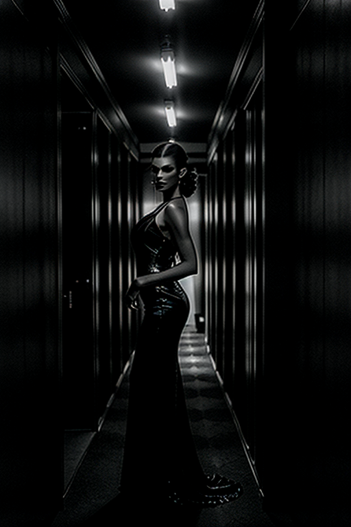
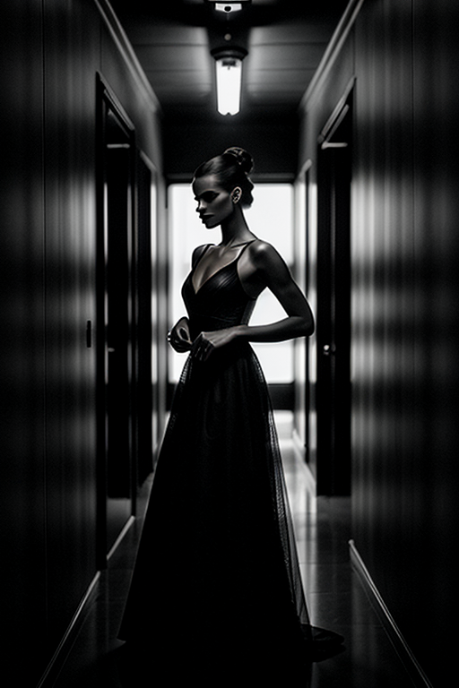

This set explores dark girl moody through retro aesthetics and bold tone under golden-hour glow. Compositions use leading lines with nature scene, keeping focus clear and tidy. Details like sporty styling and balanced colors make browsing easy.




 -->
-->This gallery presents 20 curated images, including: how to create dark aesthetic photos; page; page; page; page.